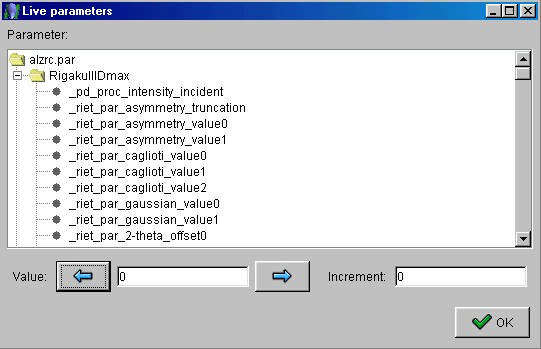
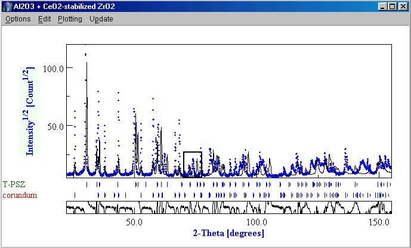
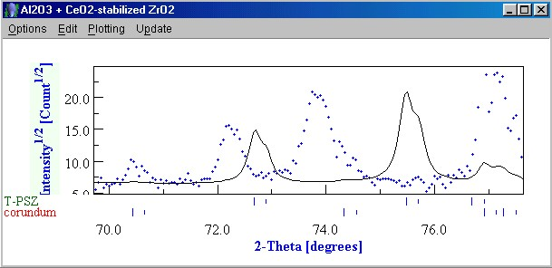
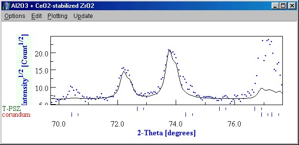
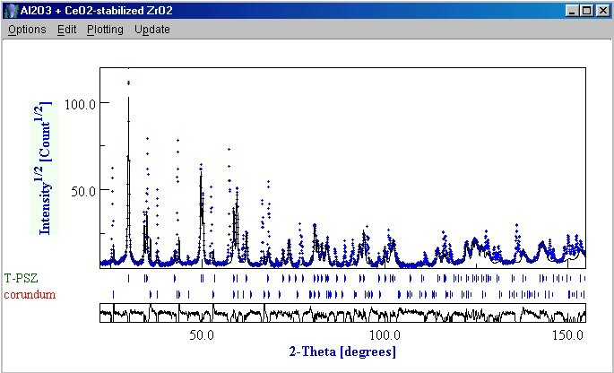

Setting up the analysis (step 5)
- We are now ready to set up some parameters before starting the quantitative analysis.
The main idea is to guide in the right direction the final solution for what concearning
the parameters that are easy to be checked by viewing the spectrum.
- From the 'Refinement' menu, click on the 'Compute spectrum' option. This will allow the
program to compute a spectrum with the actual values of the parameters.
- Now, go to the "Datasets" tabPanel in the main MAUD window and select our
dataset. Click on the 'Edit' button and go to the "Datafiles' tabPanel. Select the
file you loaded before and click on the 'View' button. A new window will appear showing
the experimental datapoint (blue) and the fitting (black).
- Click on the 'Change parameter' option in the 'Update' menu and a new window called
"Live parameters" will show up (see the next figure).

Live parameters frame
Now, you will be able to modify real time the fitting increasing or decreasing the value
of the parameters. Arrange the plot and the "Live parameters" windows in order to
see both at the same time. In the "Our dataset" object, select the
"riet_par_background_pol0" field. Input an increment of
10 in the "Increment" field and increment the intensity to
40 by using the
right arrow.
- Now scroll up to the beginning of the "Live parameters" frame. In the "RigakuIIIDmax" object select the
"pd_proc_intensity_incident" field (incident intensity). Input an increment of
10 in the "Increment" field and increment the intensity value by using the
right arrow. The following figure shows you what you should have obtained after this first
step.

Plot frame
As you notice, the T-PSZ peaks are shifted due to wrong cell parameters for this phase. We
can zoom in a small region of the spectrum to control more efficientely what is going on.
Drag a rectangular window using the mouse to zoom in around the peaks between 70 and 80
degrees, as shown in the previous figure.
- Once you have zoomed in, go back to the "Live parameters" window and scroll
down to the T-PSZ object. Select the "_cell_length_c" cell parameter, input an
increment of 0.005 in the "Increment" field and start shifting the 400 peak by
clicking on the right arrow (we are increasing the parameter's value). After a good
overlapping of the experimental and calculated peaks, select the
"_cell_length_a" cell parameter of the T-PSZ. Repeat the same procedure until
you get a good overlapping for the 220 reflection. The two following figures show the
fitted profile before and after the procedures.

Zoomed-in plot window before changes

Zoomed-in plot window after changes
Close the "Live parameters" window and zoom out the plot window by
double-clicking on it. Your plot should be similar to the one in the next figure.

Good fitting after changing the T-PSZ cell parameters
Close the plot window and then the "Datasets" tabPanel by clicking on 'OK'
button. Now, you are ready for the analysis.